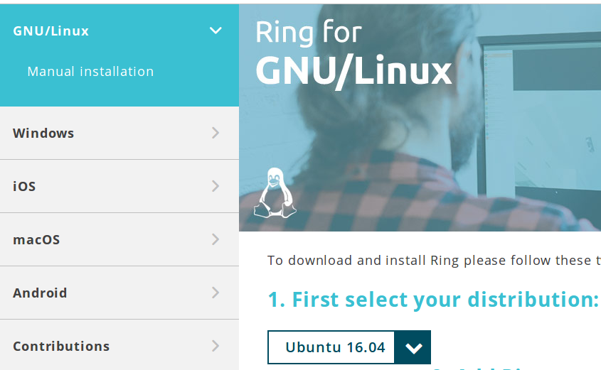

文章名：如何使用GNU Ring？
作者：冰焰火灵X
文章许可：CC BY-SA 4.0

1
点击左边选择你的系统版本（这里以 GNU/Linux 为例，我使用的是Mint 18.3），然后右边选择你的系统版本。我的发行版基于Ubuntu 16.04。
按照提示的方法安装。
sudo sh -c "echo 'deb https://dl.ring.cx/ring-nightly/ubuntu_16.04/ ring main' > /etc/apt/sources.list.d/ring-nightly-main.list" sudo apt-key adv --keyserver pgp.mit.edu --recv-keys A295D773307D25A33AE72F2F64CD5FA175348F84 sudo add-apt-repository universe sudo apt-get update && sudo apt-get install ring
如果是Windows操作系统，则可以下载对应的安装包来进行安装。
2
点击上面的 创建账户 然后，输入你的名字，设定用户名和密码，点击下一步。这样就创建完成了！
3
之后还需要做一件很重要的事情哦！
为了保证重装系统或者更换设备后仍然可以继续使用以前的帐号，你必须将帐号信息导出。这个是新版GNU Ring 新增的一个非常重要的功能！
4
点击小齿轮图标，然后进入设置，选择 “账户”！
5
点击 “Export account” 按钮，将账户保存下来。
这样就可以了！ 如果你需要在其他设备上登陆，只需要将保存好的xxxx.gz文件拷贝上去，然后
2
点击下面的 “将此设备与一个账户进行连接” 。
6
点击，Or import a file 浏览选择你的账户文件，选择好以后在下面输入密码。 这样就可以登陆啦！
方法很简单。 点击“账户”右边的小箭头，返回主面板。

7
然后在左上角输入你想添加的人的用户名，搜索到以后点击一下，右击 ----> Add to conversations，就把对方添加到通讯录了。 如果要删除，在通讯录点击某个人，然后右击 ----> Remove Add to conversation.
The END.